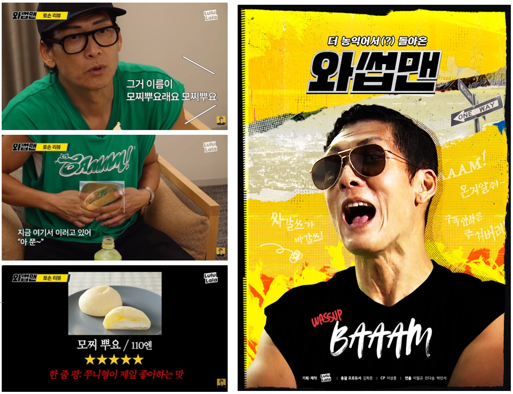

‘Wassup Man’ Konbini
One of four episodes in the Japan series. The cast visits Japan’s three major convenience store chains to taste and review their most popular foods and products.
- 01Edited the 07:00–12:20 segment solo
- 02Planned the episode and directed on set
- 03Footage backup, sync, dialogue captions and VCR
900K views · 60% contribution
Watch the episode ↗
- Found cast reactions and fun beats to offset a one-room shoot
- Boosted the variety feel with varied layouts and sound effects
- Built a hooking opening with early highlights and a VCR
- Designed review-summary screens with ratings for each food